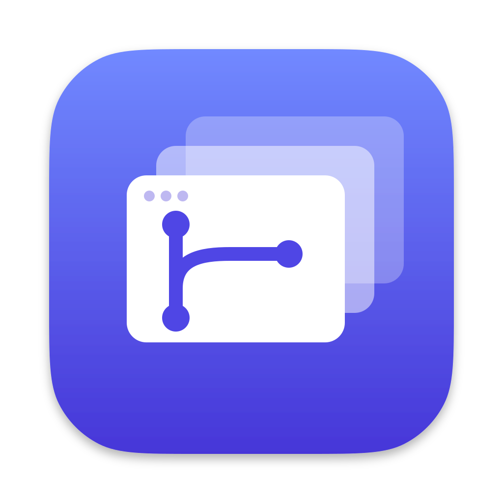

A context switcher that keeps your attention in one place.
Working across a few large repositories tends to mean dozens of branches at
a time and several shells open, each busy with a different task, and more and
more of them running a program that works on its own for a while and then
needs an answer. Machine time and disk space are cheap, but your attention
is not. It should go to the decisions: answering that question, looking over
a result, starting a branch or finishing one. The rest is finding the right
terminal window, editor or browser tab, remembering where things were,
waiting for a clone, and wondering which of app,
app-1234-fix-header and app-b is merged and safe to
delete. None of it is hard.
parallelist is an attempt to keep that attention for the decisions. It puts the projects, their branches, the workspaces holding them and the shells running there in a single window, tries to show only what actually needs you, and gets you there in a keystroke. It also tries not to pull you away from whatever you're in the middle of. That's the idea, anyway.
It's also a small bet against everything moving into the terminal. The terminals here run anything, an agent, a dev server, a plain shell, but everything around them is an ordinary window, with lists to scan and things to click. GUIs were invented for a reason, and it seems a shame to give them up.
parallelist is built around branches you start and finish many times a day. Each branch gets a workspace, a directory of its own holding it as a git worktree or a full clone, so several programs can work on the same project at once without changing each other's files. Some branches need careful review and a trail of comments for whoever reads the history later. Others are a way to build several things side by side while you iterate, and are merged and removed within the hour. Both kinds need quick ends: a new workspace with its dev app running in seconds, and gone in seconds once the branch is done. If setting one up were slow, you would skip it and work in a directory that is already open. If removing one felt risky, it would stay on disk.
A mark means something needs your attention.
| Orange. Something in that terminal is waiting for an answer. | |
| Blue. A program finished while you were looking elsewhere. Look at it and the mark goes. | |
| Blinking. Still working. Nothing to decide there yet. |
Anything you're already looking at isn't marked, and output alone never counts, or a chatty dev server would sit at the top for good. Work you start in the background finishes in the background: it waits for you to come to it rather than jumping in front of whatever you're doing. The queue along the bottom lists everything that is waiting, oldest first, and ⌘↵ goes to the next one.
gh, its workspaces and their terminals, and an issue becomes
a row when you start a workspace for it. Filtered to what is assigned to
you or in flight, it is the to-do list, and a row goes when the work is
merged and cleaned up.git and gh you already have, so
your hooks, credential helpers and SSH config work as they do in a
terminal.There's no download yet. You'll need git,
Rust and pnpm,
and optionally gh for pull
request data. Then:
git clone https://github.com/sgtlambda/parallelist.git cd parallelist ./run.sh --build
That builds the app, copies it to /Applications and starts it.
If anything's missing, run.sh says what and how to install it.